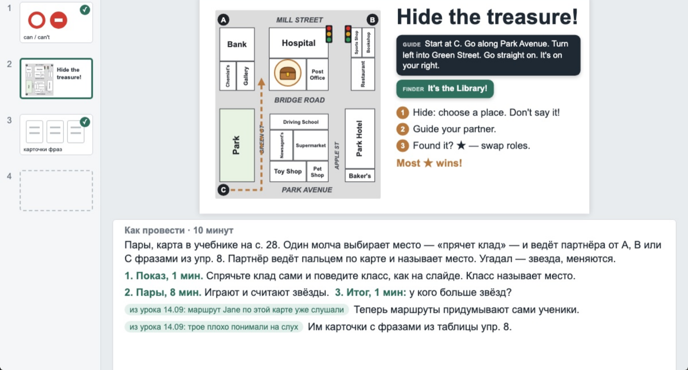
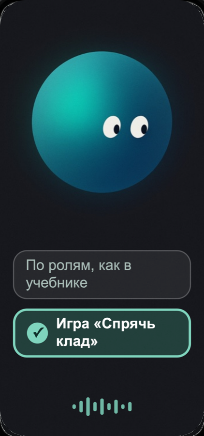

Программа, которая помнит каждый класс и вместе с учителем готовит уроки по учебнику. Она видит страницу, предлагает, как провести задание, и объясняет почему. Решает учитель.

У каждого класса есть журнал по учебнику: что прошли, что сработало, что далось трудно. Следующий урок начинается с того, на чём закончился прошлый. Заметка после урока — по желанию.
Предложения берутся из методической базы: подходы, этапы урока и типы заданий, у каждого объяснение и источник. Она хранится в обычных текстовых файлах, их можно читать и дополнять.
Для учителя это персонаж на экране телефона или планшета. Он слушает, а камера показывает ему страницу учебника.

Память между разговорами уже работает: мой домашний настольный робот говорит и помнит, что ему сказали. Есть первая версия методической базы для уроков английского. Самого приложения компаньона пока нет. Первый пилот задуман с учителями английского.
Компаньон живёт на экране, персонажем в телефоне или планшете. Настольный робот остаётся моим домашним.
Проект принял нынешнюю форму: компаньон, который готовит уроки вместе с учителем и помнит каждый класс.
Проба другой формы: помощник слушает урок и считает, как учитель его ведёт. На моих собственных записях я жду после вопроса меньше секунды.
Начало: помощник на часы перед уроком, в небольшом роботе на столе.